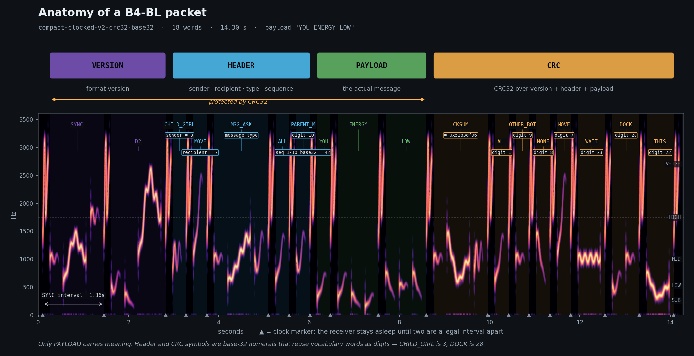

A constructed language for robots, that humans can learn by ear.
Astromech droids beep at each other and, over time, you start to get it — not the words, but the mood. This page demonstrates B4-BL's language and sound. The separately encoded Full transport adds addressing and CRC32 verification.
The same sentence — "Is your energy low?" — in four emotional registers. The words are identical; only the expressive prosody changes. These samples use the language sound demo, not the released clocked transport.
Pick a sentence shape, then fill it. The dropdowns only offer words the grammar
allows in that slot. This builder synthesizes codec.encode for
listening; its audio is not input to the released clocked decoder.
Every phoneme is a point in a four-dimensional space — band, contour, duration, sound class. Click any one to hear it.
215 morphemes. Common words get short codes; rare words get longer ones, assigned with a minimum Hamming distance of 2 so one misheard sound cannot silently become a different word.
Underneath the language is a transport: CRC32-protected packets with versioning, addressing, and sequence numbers.
YOU ENERGY LOW
with addressing and CRC32.

DOCK in the checksum is a numeral, not the concept "dock". Protocol
overhead reuses the existing sound inventory instead of inventing new noises.